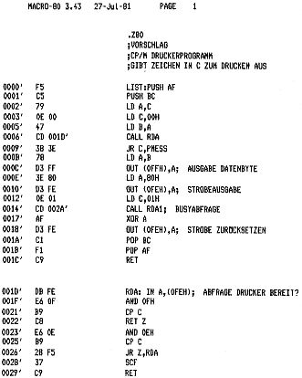

80-Bus Journal |
April/Mai/Juni 1984 · Ausgabe 2 |
von Dieter Metzler
G. Böhm hat mich gebeten, als 80-bus Journal-Leser auch einmal etwas für die anderen Leser zu tun, was ich hiermit beginnen möchte. Die Interessengruppe, der ich angeschlossen bin, arbeitet zwar mit SHARP-Systemen, die peripheren Geräte werden aber mit dem ECB-Bus angesteuert, sodaß Beiträge von unserer Seite durchaus möglich sind.
Unser System ist so aufgebaut, daß die einzelne Karte immer nue eine oder sehr wenige Funktionen zu verwalten hat. Wir legen also mehr Wert auf leicht überschaubare Einheiten, als auf eng geschachtelte Multifunktionskarten, welche eine Fehlersuche oftmals zum Alptraum werden lassen. Auch die vorliegende Schaltung ist einfach gehalten, sie ist im wesentlichen der internen Druckeransteuerung des SHARP MZ-700 nachempfunden und kann über Brücken oder Dil-Schalter für jede Adresse von 00H bis FFH programmiert werden, wobei jeweils 2 Adressen belegt werden. Die Karten laufen seit mehreren Monaten fehlerfrei, betrieben entweder am SHARP-Monitor oder durch CP/M angesteuert, welches bei uns zwischenzeitlich auch fehlerfrei läuft.
Das auszugebende Datenbyte wird in V1 abgespeichert und über V2 dem Drucker zur Verfügung gestellt. Anschließend wird dem Drucker über V5 das Strobe-Signal geschickt, welches ihm das Anliegen eines gültigen Datenbytes signalisiert. Die Übernahme der Daten quittiert der Drucker mit ‚Busy‘ und zeigt damit seine Bereitschaft für neue Taten an. Die Abfrage des Druckers erfolgt über V3, welches die anliegenden Zustände auf den Datenbus legt.
Die Daten D0…D2 können im Programm einzeln ausgewertet werden, jenachdem ob der einzelne Anwender dies wünscht oder nicht, abgestimmt auf die Möglichkeiten des vorhandenen Druckers. Die einzelnen Leitungen zum Drucker sind alle gepuffert, sodaß eine längere Zuleitung zum Drucker keine Probleme macht.
Die Anschlußbelegung der Druckerleitung ist in Schaltbild zu ersehen. Mein Triumpf-Adler Drucker hat einen 40-pol. Platinenanschluß, der aber Centronix – Pin komp. ist. Aus diesem Grund wird die Karte mit einer 40-pol. Stiftleiste bestückt.( Die nächst kleinere hat nur 34 Pole.) Das Flachbandkabel benötigt natürlich nach Centronix Norm nur 36 Pole.
Hinzu kommt die Platine,welche wir bei entsprechender Nachfrage in der gewohnten Qualität, durchkontaktiert mit verzinnten Leiterbahnen anbieten werden. Bestellungen richten Sie bitte an G. Böhm.

| Seite 35 von 52 |
|---|